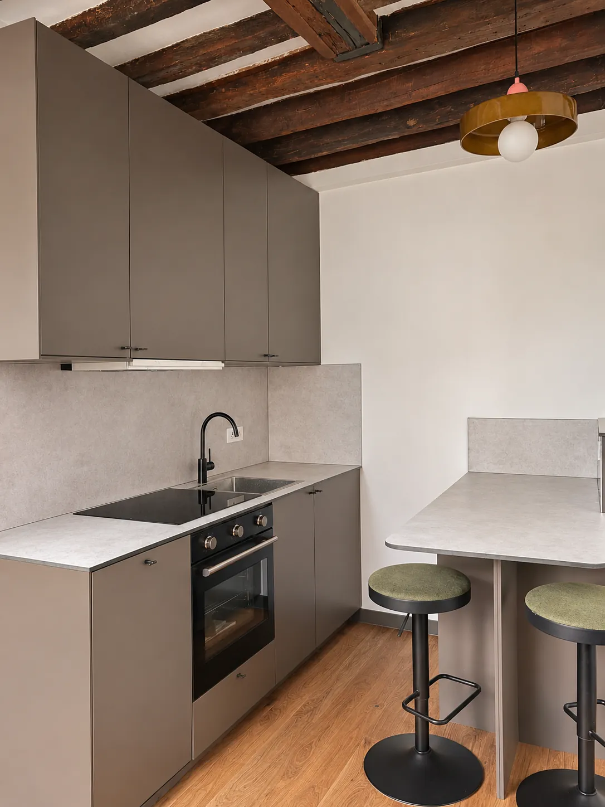
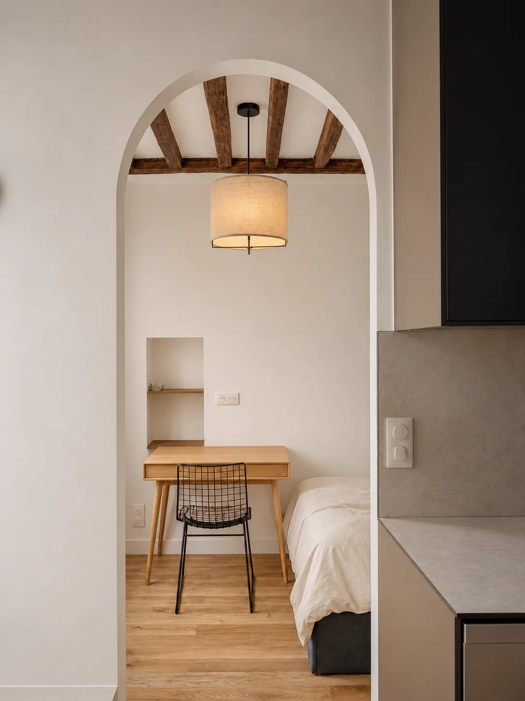
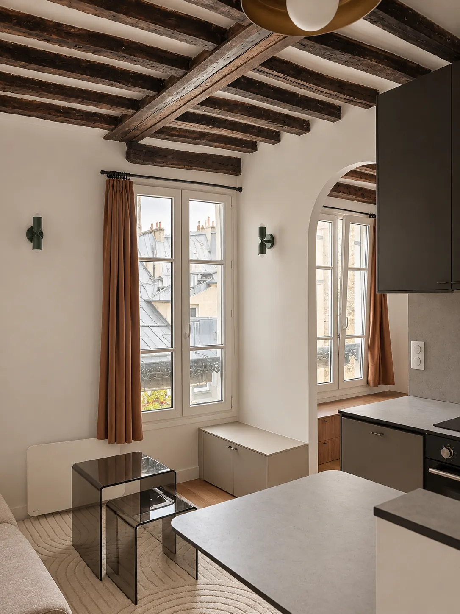
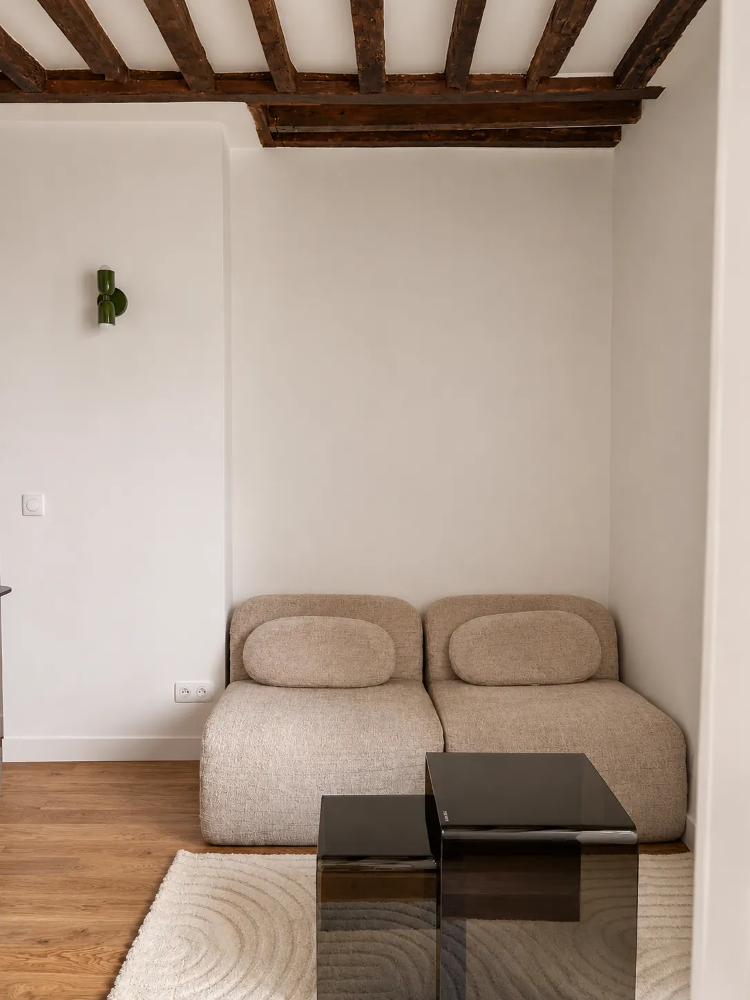
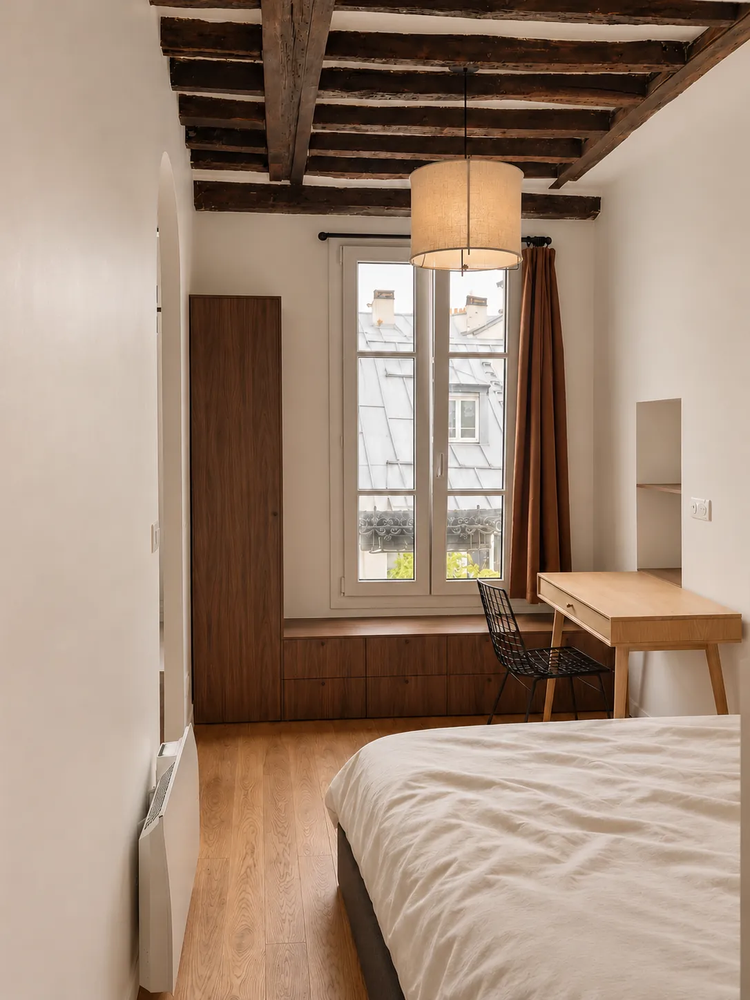
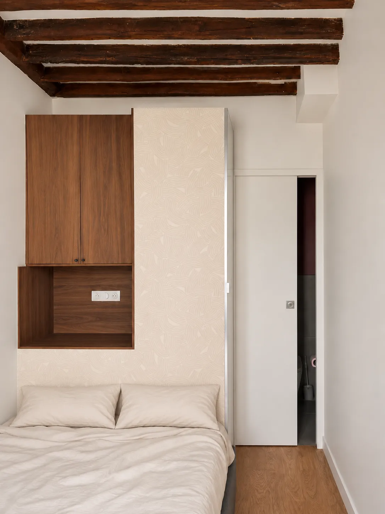
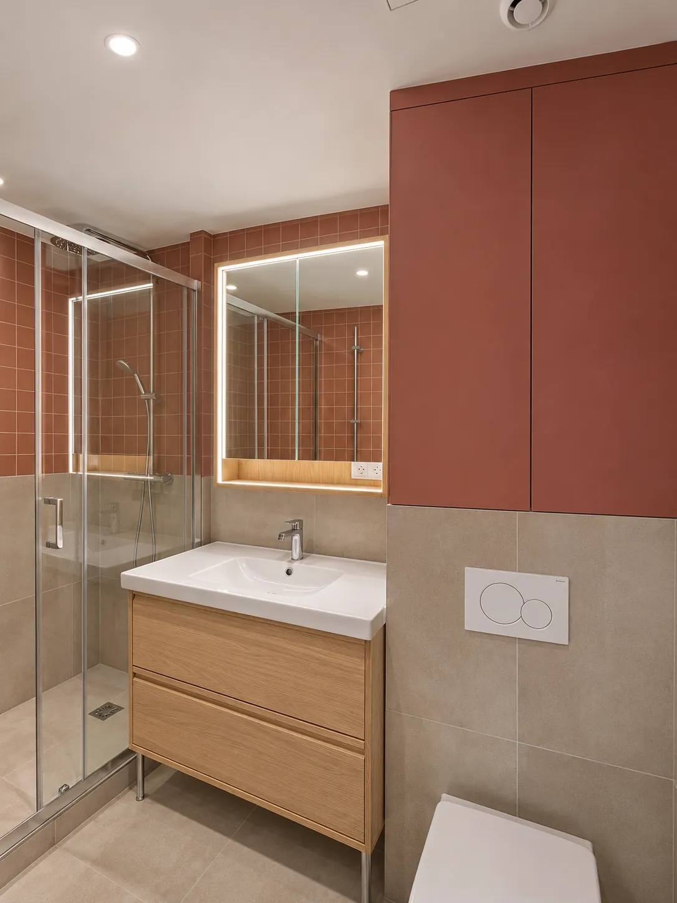
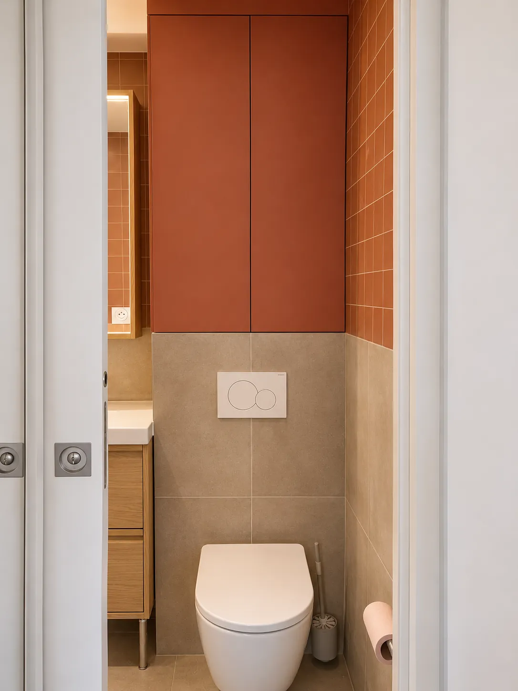

Stouls Studio / Portfolio / Studio Mazarine, Paris 6e
Studio Mazarine, Paris 6e
Un studio de 24 m² repensé pour un investissement locatif, avec un coin nuit séparé de l'espace de vie et une cuisine où l'on peut cuisiner et dîner.
- Type
- Investissement locatif
- Lieu
- Paris, 6e arrondissement
- Surface
- Environ 24 m²
- Intervention du studio
- Rénovation complète pour un investissement locatif
Le studio a été refait intégralement pour un investissement locatif. Le plan a été optimisé pour obtenir ce qu'un studio offre rarement : un coin nuit séparé de l'espace de vie. Une ouverture en arche marque le passage. D'un côté, le lit, un bureau sous la fenêtre et une tête de lit avec rangements intégrés. De l'autre, le canapé et la cuisine.
La cuisine est largement équipée pour 24 m² : plaque, four, évier, placards toute hauteur et un comptoir arrondi avec tabourets. Il y a la place de cuisiner, et la place de s'asseoir pour dîner. Un banc avec rangements court sous la fenêtre à côté.
Les poutres anciennes du plafond ont été conservées et laissées sombres sur des murs blancs. La salle d'eau est carrelée en rouge terracotta et en sable, avec un miroir rétroéclairé et un meuble vasque en chêne.









Un projet comme celui-ci
Si ce projet ressemble à ce que vous avez en tête, dites-le-moi. Un lien vers cette page et deux lignes sur votre budget et votre calendrier suffisent pour commencer.
Précédent : Appartement, Paris 9eSuivant : Studio Grands-Augustins, Paris 6e